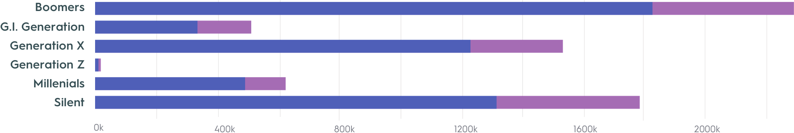

1976-2016
A GLOBAL LOOK AT
SUICIDE CRISIS
01
Data From Global Suicide
800,000
People suicide every year
Age
15-29
2nd leading cause of death
79%
low & mid income
20%
Self-Poisoning
02
Who Is Commiting Suicide?
This visualization compares suicide rates from 1976 -2016 by comparing generation, sex, GDP, and population with this Dashboard
Suicide and Generation Rates